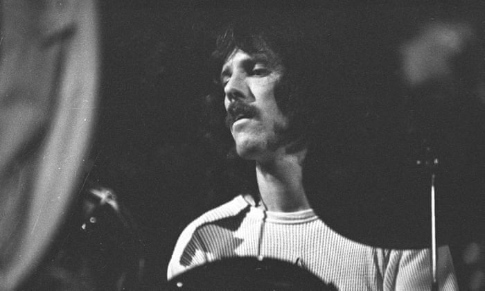

Integrantes
Jim Morrison
James Douglas Morrison (Melbourne, Florida; 8 de diciembre de 1943-París, Francia; 3 de julio de 1971).
En el centro de la mística de The Doors está la presencia magnética del cantante y poeta Jim Morrison, el “Rey
Lagarto” vestido de cuero que trajo el poder fascinante de un chamán al micrófono.
Desafiando constantemente la censura y la sabiduría convencional, las letras de Morrison ahondaron en temas
primordiales como el sexo, la violencia, la libertad y el espíritu. Indignó a las figuras de autoridad, desafió
la intimidación y el arresto.
A lo largo de seis álbumes extraordinarios e innumerables actuaciones en vivo que rompieron fronteras, cambió
inexorablemente el curso de la música rock y murió en 1971 a la edad de 27 años. Fue enterrado en París, y
fanáticos de todo el mundo peregrinaban regularmente a su tumba.

Ray Manzarek
Ray Manzarek fue el arquitecto del embriagador sonido del teclado de The Doors. La evocadora interpretación de
Manzarek fusionó rock, jazz, blues, bossa nova y una variedad de otros estilos en algo completamente nuevo y
deslumbrante.
cuando Jim Morrison y Manzarek, nativo de Chicago, ambos estudiantes de cine de UCLA, se conocieron en Venice
Beach. La poesía del cantante encajaba perfectamente con las ideas musicales del teclista de formación clásica
Aunque varios bajistas audicionaron para el grupo, ninguno pudo igualar las líneas de bajo proporcionadas por la
mano izquierda de Manzarek.
Nacimiento: 12 de febrero de 1939
Muerte: 20 de mayo de 2013
John Densmore

El baterista John Densmore fue mucho más que el motor rítmico de The Doors. Fuertemente influenciado por los
skinsmen del jazz como Elvin Jones y los ritmos flexibles de la ola brasileña, trajo un sentido altamente
evolucionado de dinámica, estructura y musicalidad a sus ritmos.
A mediados de los 60 se unió al guitarrista Robby Krieger en una banda llamada Psychedelic Rangers; poco después
se conectaron con el teclista Ray Manzarek y Morrison, y comenzó un capítulo explosivo en el desarrollo del rock
'n' roll.
John Densmore Santa Mónica (California), 1 de diciembre de 1944 es un baterista que fue parte del grupo de rock
"The Doors" de 1965 a 1973.
Robby Krieger
Con un don para el deslizamiento de cuellos de botella, solos exploratorios y ritmos gutbucket, el guitarrista
Robby Krieger aportó una intensidad sinuosa y punzante al sonido de The Doors. Pero también fue un compositor
clave en la banda y escribió algunos de sus mayores éxitos, en particular su fascinante éxito # 1, "Light My
Fire".
Antes de tocar la guitarra a los 17 años, el nativo de Los Ángeles estudió trompeta y piano. La inspiración para
cambiar a la guitarra no vino del rock 'n' roll, sino de la música flamenca española.
"Creo que tocar la guitarra es probablemente lo único que mejora con la edad", dice. Robert Krieger figura entre
los "100 mejores guitarristas de todos los tiempos" de la revista Rolling Stone.
Robert Alan Krieger (Los Ángeles, California; 8 de enero de 1946)